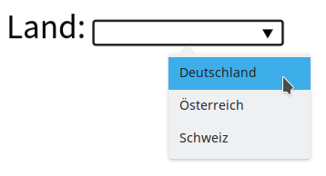

Prof. Dr.-Ing. Johannes Schildgen
johannes.schildgen@oth-regensburg.de
Programmieren 2 (Python)
Kapitel 5: Vererbung


Vererbung
Subklasse erweitert die Superklasse und erbt alle deren Attribute und Methoden
Vererbung
Polymorphie
Polymorphie (Vielgestaltigkeit) bedeutet, dass ein und die selbe Variable zur Laufzeit von unterschiedlichen Datentypen sein kann.
isinstance(x, C)
Ist wahr, wenn x von der Klasse C oder einer (auch indirekten) Subklasse von C ist.
Was wird hier ausgegeben?
- Ute studiert.
- Ute lebt.
- beides
- gar nichts
https://frage.space
Polymorphie
Sei B eine Subklasse von A.
Wo ein A-Objekt erwartet wird, wird auch ein B-Objekt akzeptiert.
Method Overriding
Neuimplementieren einer Methode einer Superklasse
Person
Studierender extends Person
Wie sieht der Rückgabewert von s.details() aus?
- 555123 Ute
- 555123 / Ute / 19
- 555123 Ute (19)
- 555123 / Ute (19)
https://frage.space
Objektreferenz super()
selfreferenziert das aktuelle Objektsuper()referenziert das Objekt der Superklasse
class Studierender(Person)
Konstruktoren-Aufruf: super().__init__
In einem Konstruktor lässt sich ein Konstruktor der Superklasse aufrufen.
Method Overriding
Zur Laufzeit wird die Methode von der tatsächlichen Klasse eines Objekts gewählt.
Peter (20)
555123 / Ute (19)
Was wird hier ausgegeben?
- Peter (20)
Ute (19) - Peter (20)
555123 / Ute (19) - 20 / Peter (20)
555123 / Ute (19)
https://frage.space
Übung 5.1
Erstellen Sie zunächst ein UML-Diagramm und entwickeln Sie dann die Klassen und testen Sie sie, indem Sie Objekte erstellen. Suchen Sie im Internet, wie Sie am besten mit Dezimalzahlen und Datumswerten in Python arbeiten. Für den Preis brauchen Sie nämlich die Klasse Decimal und für das Datum datetime.
- Erstellen Sie eine Klasse Fahrkarte und deren Subklasse Zeitkarte.
- Eine Fahrkarte hat eine Zone und einen Preis, eine Zeitkarte hat zusätzlich die Info von wann bis wann sie gültig ist.
- Der Konstruktor für Fahrkarte und Zeitkarte nimmt jeweils nur die Bezeichnung entgegen.
- Beim Erstellen eines neuen Zeitkarten-Objekts soll deren Gültigkeit immer heute beginnen und das Ende unbegrenzt (
None) sein. - Eine Zeitkarte hat die Methode
kuendigen(), die beim Aufruf die Gültigkeit auf den Ende des aktuellen Monats setzt. - In Fahrkarte und Zeitkarte gibt es jeweils die Methode
rabatt(), die beim Aufruf den Preis der Karte um 25% bzw. für Zeitkarten um 10% reduziert.
Die Klasse object
Jede Klasse ist Subklasse der Klasse object.
Mehrfachvererbung
In Python ist es erlaubt, dass eine Klasse mehrere Superklassen hat.
Mehrfachvererbung
Mehrfachvererbung
Method Resolution Order (MRU)
Welche Methode wird in einer Vererbungshierarchie gewählt?
- Eine Subklasse hat immer Vorrang zu seiner Superklasse
- Bei mehreren Superklassen: Tiefensuche von links nach rechts
- Wenn sich 1. und 2. widersprechen, wird eine Exception (TypeError) geworfen.
C → A → B
D → C → A → B → B
D → B → AX → C → A
Method Resolution Order (MRU)
Welche Methode wird in einer Vererbungshierarchie gewählt?
- Eine Subklasse hat immer Vorrang zu seiner Superklasse
- Bei mehreren Superklassen: Tiefensuche von links nach rechts
- Wenn sich 1. und 2. widersprechen, wird eine Exception (TypeError) geworfen.
C → AX → B → A ↯
Da aber C(A,B), wäre diese Ordnung ein Widerspruch ↯
TypeError: Cannot create a consistent method resolution order (MRO) for bases A, B
Mehrfachvererbung
Welcher Verkaufswert wird für unser Hausboot ausgegeben?
- 0
- 70
- 150000
- TypeError
https://frage.space
Mehrfachvererbung
Beispiel: Combobox(TextBox, DropDownList)

Übung 5.2
Erstellen Sie ein UML-Diagramm für ein soziales Netzwerk. Es gibt Benutzer, die einen Namen und eine E-Mail-Adresse haben. Als Subklasse von Benutzer gibt es Werbepartner, die Anzeigen schalten können. Eine Anzeige hat einen Text, die Anzahl an Einblendungen und Anzahl der Klicks. Außerdem gibt es Beiträge. Ein Beitrag hat einen Text und eine Anzahl an Likes. Ein Beitrag wird immer von genau einem Benutzer verfasst. Subklassen von Beitrag sind Bildbeitrag, Video (beide jeweils mit einer URL zum Bild bzw. Video) und die eben erwähnte Werbeanzeige. Eine Werbeanzeige soll noch ein privates Attribut beinhalten, in der die Menge der Benutzer gespeichert werden, die bereits auf die Anzeige geklickt haben. Außerdem soll es bei Werbeanzeigen eine klick-Methode geben, die einen Benutzer entgegennimmt, der auf die Werbeanzeige geklickt hat. Führen Sie auch sinnvolle Konstruktoren in Ihre Klassen ein.
Kapitelzusammenfassung
- Vererbung (
Subklasse(Superklasse)) isinstance- Method-Overriding,
super() - UML
- Mehrfachvererbung, MRU